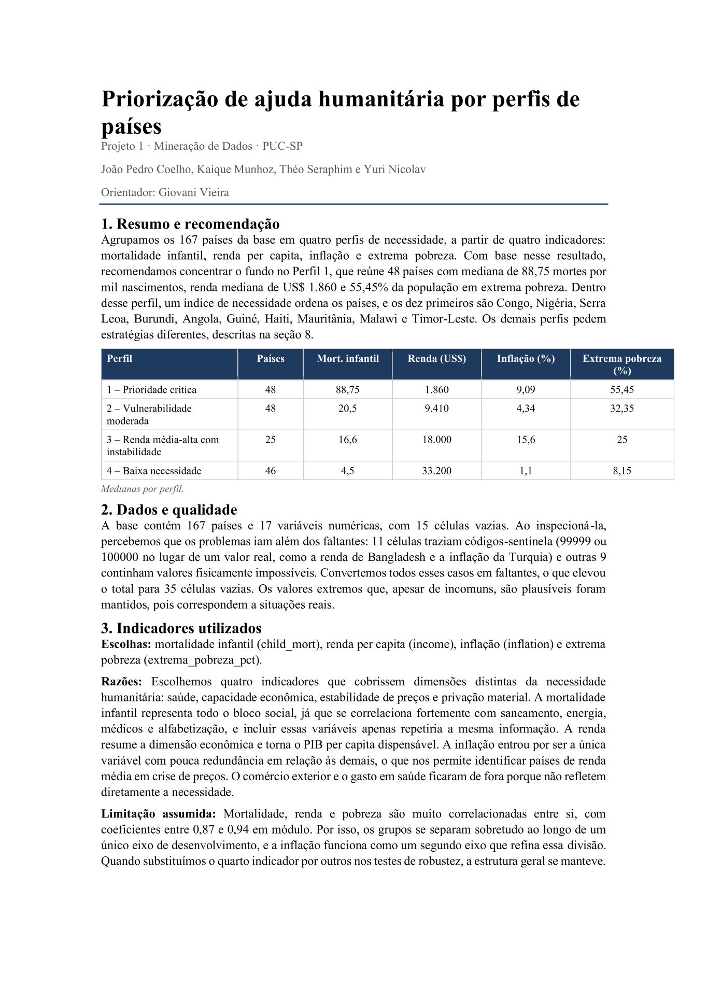

Priorização de ajuda humanitária por perfis de países
Projeto de mineração e análise de dados que agrupa os 167 países da base em quatro perfis de necessidade, a partir de quatro indicadores: mortalidade infantil, renda per capita, inflação e extrema pobreza. Com base no resultado, a recomendação é concentrar o fundo no Perfil 1. Dentro desse perfil, um índice de necessidade ordena os países. Os demais perfis pedem estratégias diferentes.
167países na base
4perfis de necessidade
48países no Perfil 1
88,75mortes / mil nascimentos (mediana, P1)
US$ 1.860renda mediana (P1)
55,45%em extrema pobreza (P1)
índice de necessidade · top 10 do Perfil 1
- Congo
- Nigéria
- Serra Leoa
- Burundi
- Angola
- Guiné
- Haiti
- Mauritânia
- Malawi
- Timor-Leste

assets/assets/mineracao-documentacao.png